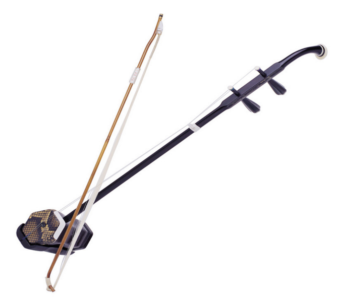
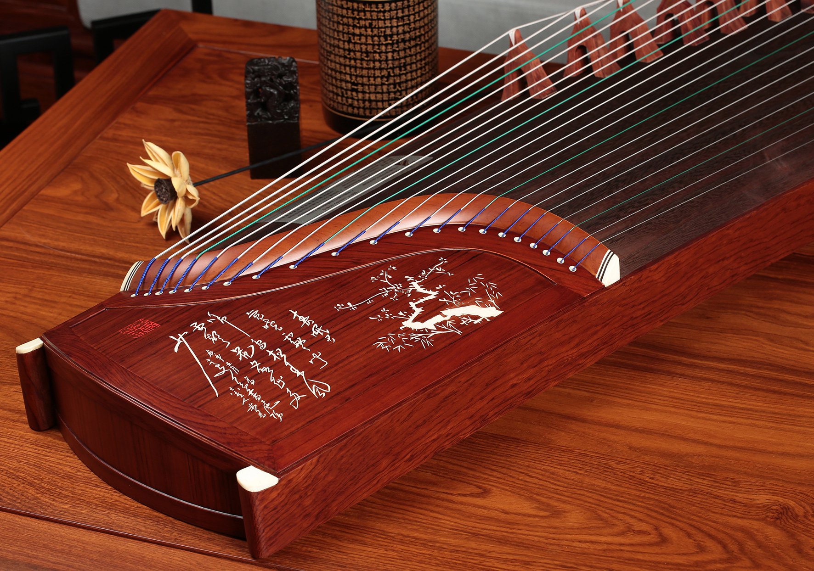
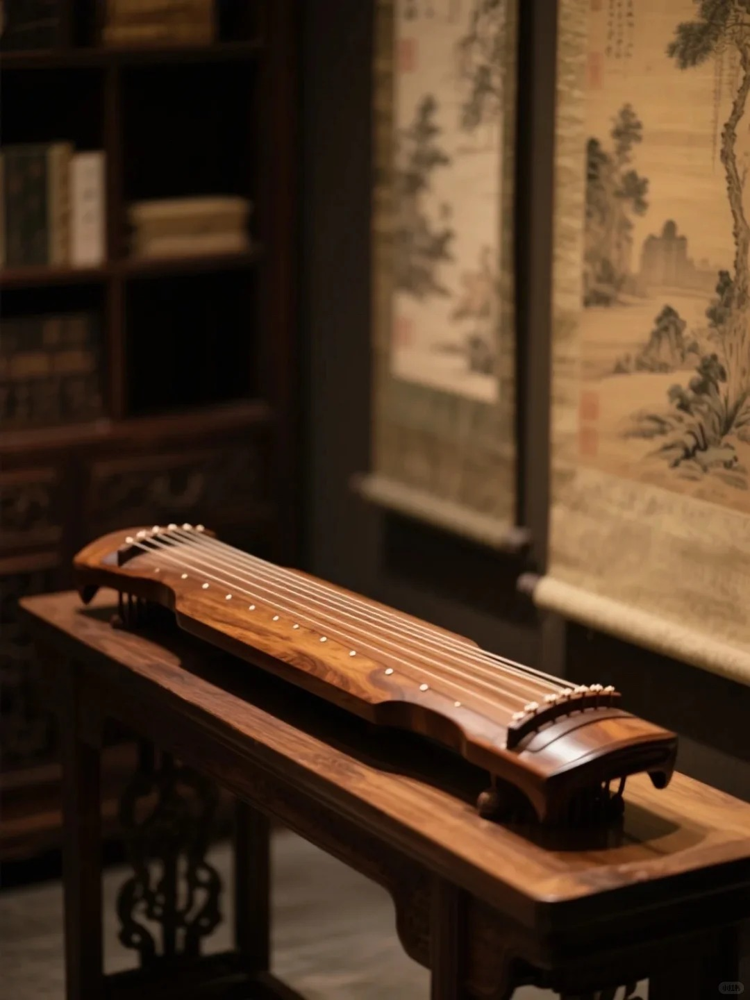
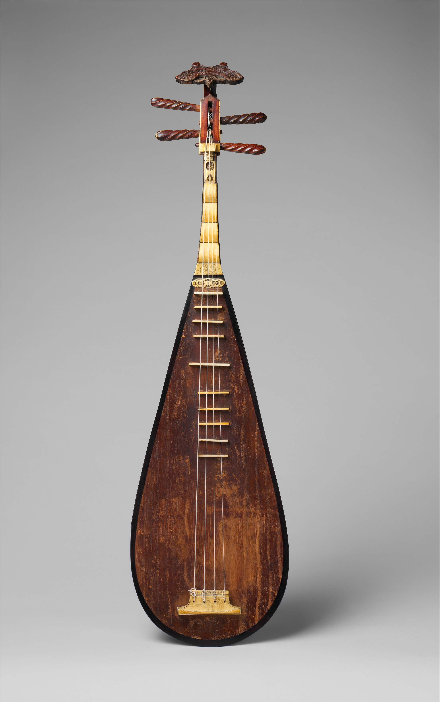
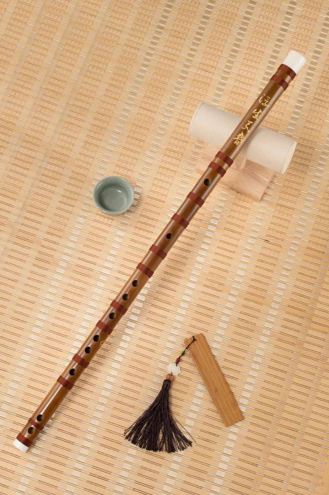
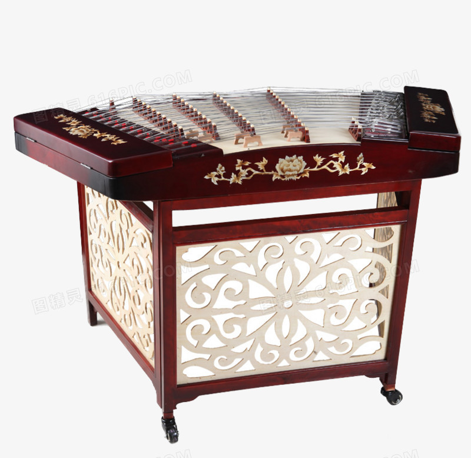
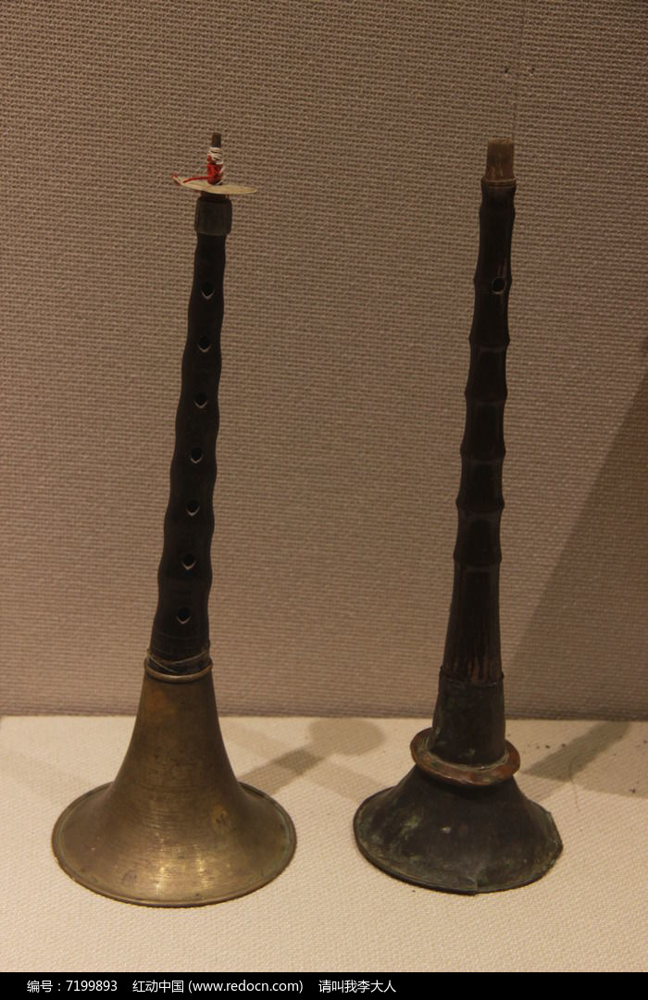
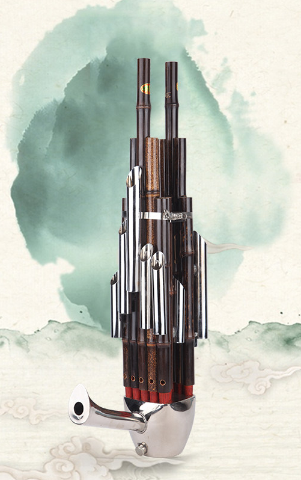
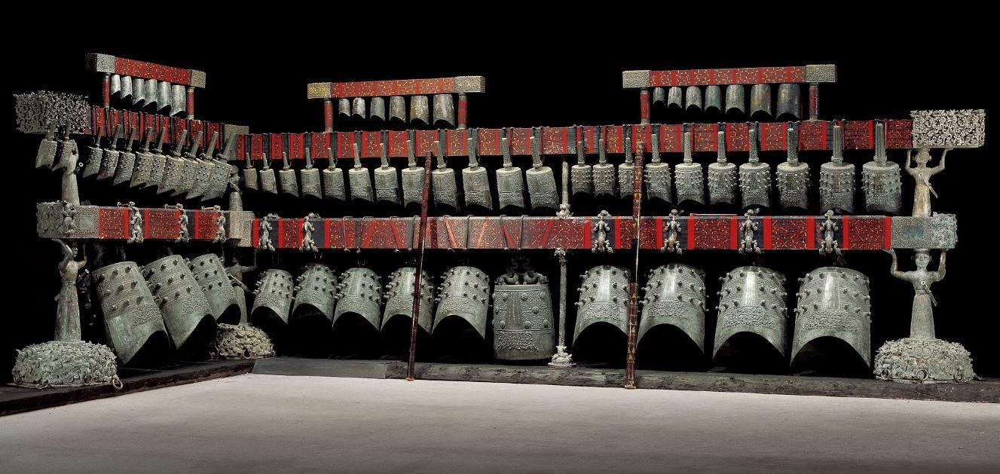

A Living Musical Heritage
Chinese music has always been built on a beautifully organized world of sounds. Traditionally, instruments were grouped into eight materials—silk (strings), bamboo (winds), wood, stone, metal, clay, gourd, and leather. These weren’t just classifications; they reflected how music was woven into everyday life, from royal ceremonies and scholarly gatherings to village celebrations and street performances.
Over thousands of years, this system shaped how instruments were designed, tuned, and combined. That’s why many instruments you’ll see here—whether bowed strings, plucked zithers, free-reed mouth organs, or piercing double-reed winds—still carry a sense of continuity, while also evolving into modern orchestras and contemporary compositions.
How to Explore
Simply hover over or tap an instrument tile to read a short introduction. Click to play a sound sample and hear
its tone come to life.

Erhu
二胡
The erhu is a traditional Chinese bowed string instrument. Its origins can be traced back to the xiqin of the Tang Dynasty, which was introduced into the Central Plains by northern nomadic peoples, making it a product of cultural integration. By the Song Dynasty, the xiqin had gradually evolved into the jiqin, and its playing technique shifted from plucking to bowing, establishing the fundamental performance form of the erhu. During the Ming and Qing Dynasties, the erhu became a primary accompanying instrument in folk opera and narrative music, with its structure gradually standardized.
In modern times, the musician Liu Tianhua reformed the erhu, expanding its range and expressive capacity, transforming it from an accompanying instrument into a solo instrument and securing its place as a core instrument in Chinese orchestras.
The erhu has a simple structure consisting mainly of a soundbox, neck, head, strings, and bow. The soundbox, usually made of bamboo or wood, acts as the resonator. The bow, made of a wooden stick and horsehair, produces sound through friction with the strings. Typically, the erhu has two strings tuned in a fifth.
As one of the most representative bowed instruments in China, the erhu produces a soft, sustained tone rich in emotional nuance. It can express both sorrowful depth and lively brightness, serving as an emotional vessel of Chinese culture and a symbol of the development of folk music, as well as an important cultural icon in international exchange.

Guzheng
古筝
The guzheng is an ancient Chinese plucked string instrument, originating in the State of Qin during the Warring States period, hence also called the “Qin zheng.” With a history of over 2,500 years, it was initially popular in regions such as Shaanxi and Gansu, serving as an important instrument in both court and folk music.
Over time, the instrument evolved structurally and technically. The Han Dynasty guzheng had 12 strings, which increased to 13 during the Tang Dynasty, then stabilized at 16 strings during the Ming and Qing Dynasties. In modern times, variants with 21 or 26 strings have emerged. Playing techniques have also expanded from simple plucking to include glissando, vibrato, and sweeping techniques, greatly enhancing expressive power.
The guzheng features an intricate structure composed of a top board, bottom board, side panels, movable bridges, strings, and fixed bridges. The top board is typically made of paulownia wood, while the bottom is made of hardwood. Strings, usually nylon-wound steel, produce a bright and resonant tone.
Rich in cultural significance, the guzheng has long been used to express personal emotions and aesthetic ideals. Its elegant and subtle sound embodies traditional Chinese aesthetics and serves as both an accompaniment instrument and a prominent solo instrument in Chinese music.

Guqin
古琴
The guqin, also known as the seven-string zither, is one of the oldest Chinese plucked instruments, with origins dating back to the late Neolithic period. Initially a five-string instrument used in rituals, it later evolved into a seven-string form during the Han Dynasty. By the Zhou Dynasty, it was central to court ritual music, and in later periods it became closely associated with scholars such as Confucius, symbolizing harmony between humanity and nature.
Its structure is simple yet symbolic: a wooden body representing Heaven and Earth, seven strings tuned to a pentatonic scale, and thirteen position markers indicating pitch. The guqin produces a deep, subtle, and lingering tone, with three primary sound types—harmonics, stopped tones, and open strings—reflecting philosophical concepts of Heaven, Earth, and Humanity.
As the foremost of the traditional “four arts,” the guqin is more than an instrument; it is a medium for self-cultivation and artistic expression, embodying Confucian and Daoist ideals. Today, it stands as a key symbol of Chinese cultural heritage and a representative of Eastern aesthetics.

Pipa
琵琶
The pipa is a traditional Chinese plucked instrument with origins tracing back to the Qin and Han Dynasties. It evolved from the straight-necked pipa (Qin pipa) and later incorporated influences from the curved-necked pipa introduced from Kucha in Central Asia during the Northern and Southern Dynasties.
The Tang Dynasty marked the golden age of the pipa. Its playing position shifted from horizontal to vertical, and its expressive techniques became highly developed. It became one of the most popular instruments in both court and folk music. The famous line by Bai Juyi—“the thick strings roar like sudden rain, the thin strings whisper like private words”—vividly captures its expressive richness.
During the Ming and Qing Dynasties, the structure stabilized, and in modern times it evolved further into a six-fret, twenty-four-position instrument with an expanded range and distinct regional schools.
The pipa consists of a head, neck, and pear-shaped body. It typically has four strings tuned in fifths. Its tone is bright, clear, and highly articulated, capable of both lyrical and powerful expression. As a representative Chinese plucked instrument, it reflects cultural exchange between China and the West and is regarded as a treasure of Chinese music.

Dizi
笛子
The dizi is one of the oldest Chinese wind instruments, with origins dating back to the Neolithic period. Bone flutes discovered at the Jiahu site in Henan are over 7,000 years old, making them among the earliest known wind instruments in the world.
By the Spring and Autumn and Warring States periods, bamboo flutes were already prominent in ensembles. During the Han Dynasty, the transverse flute with seven holes was developed. By the Tang Dynasty, the addition of a membrane hole covered with a reed membrane gave the instrument its distinctive bright tone.
The dizi is typically made of bamboo and consists of a blowing hole, membrane hole, finger holes, and end holes. The membrane is essential to its unique timbre.
Its tone is clear, bright, and penetrating, capable of expressing both tranquil pastoral scenes and bold, spirited emotions. It is one of the most widely used instruments in Chinese folk music and a quintessential symbol of Chinese musical culture.

Yangqin
扬琴
The yangqin is a traditional Chinese hammered dulcimer, originally from ancient Persia (modern Iran), where it was known as the santur. It was introduced to China during the late Ming or early Qing Dynasty via the Silk Road or maritime trade routes.
After its introduction, the yangqin integrated into Chinese musical traditions, becoming an important instrument in regional ensembles such as Jiangnan sizhu and Cantonese music. Modern reforms expanded its range and improved its tonal quality, evolving from three-course strings to five-course systems.
The instrument consists of a trapezoidal wooden soundboard, strings, bridges, and bamboo beaters. The strings are struck with rubber-tipped mallets.
Its tone is bright, crisp, and full, suitable for both accompaniment and solo performance. The yangqin represents a fusion of Eastern and Western musical cultures and enriches the expressive capacity of Chinese music.

Suona
唢呐
The suona is a traditional Chinese double-reed wind instrument, introduced from Persia no later than the Jin-Yuan period. It was later adapted and localized by Chinese musicians such as Zhu Zaiyu in the Ming Dynasty.
Originally used in military bands, the suona became widely used in folk ceremonies such as weddings and funerals. In modern times, keyed versions have expanded its range and technical possibilities. It was listed as a national intangible cultural heritage in 2006.
The instrument consists of a reed, mouthpiece, wooden body, and metal bell. It produces a powerful, high-pitched, and penetrating sound.
The suona can express both intense, energetic melodies and deeply emotional passages, making it a vital carrier of folk traditions and cultural expression.

Sheng
笙
The sheng is an ancient Chinese free-reed instrument with a history of over 3,000 years. Early forms appeared in the Shang Dynasty, and archaeological discoveries date back more than 2,400 years.
It consists of multiple bamboo pipes inserted into a wind chamber, each with a metal reed. By covering different holes, the player produces sound.
The sheng is notable as the earliest instrument to use free reeds and the only traditional Chinese wind instrument capable of producing harmony. Its tone is soft, refined, and elegant.
It played a significant role in ancient ritual music and influenced the development of Western instruments such as the pipe organ, serving as a bridge in cross-cultural musical exchange.

Bianzhong
编钟
The bianzhong is a set of ancient Chinese bronze bells, dating back to the late Neolithic period. It reached its peak during the Spring and Autumn and Warring States periods. The famous set from the Tomb of Marquis Yi of Zeng consists of 65 bells with a wide tonal range and exceptional sound quality.
Each bell can produce two distinct pitches depending on where it is struck. The bells are suspended on wooden frames and played with mallets.
The bianzhong was central to ancient Chinese ritual and court music, symbolizing power, hierarchy, and cultural sophistication. Its advanced casting techniques and musical system reflect the scientific and artistic achievements of ancient China.
It stands as a remarkable symbol of Chinese civilization and a unique achievement in world music history.